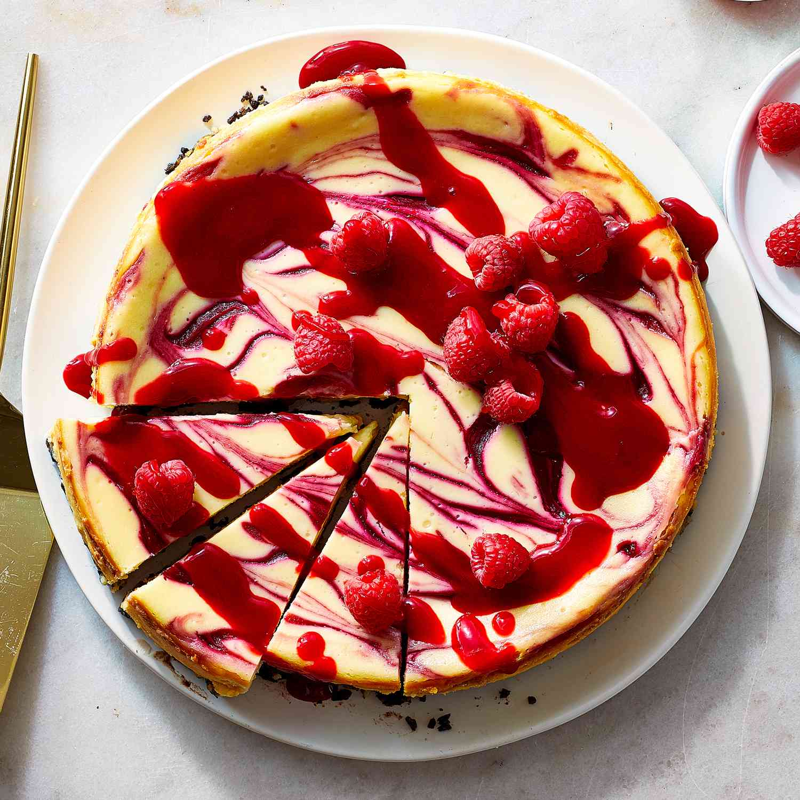

Home
White Chocolate Raspberry Cheesecake

Description
This white chocolate raspberry cheesecake is excellent and similar
to one you would get in a restaurant.
Great for special occasions.
Garnish with white chocolate curls if desired.
Sourced from
allrecipes.
Ingredients
Crust:
- 1 cup chocolate cookie crumbs
- 1⁄4 cup butter, melted
- 3 tablespoons white sugar
Sauce:
- 1 (10 ounce) package frozen raspberries
- 1⁄2 cup water
- 2 tablespoons white sugar
- 2 teaspoons cornstarch
Cheesecake:
- 2 cups white chocolate chips
- 1⁄2 cup half-and-half cream
- 3 (8 ounce) packages cream cheese, softened
- 1⁄2 cup white sugar
- 3 large eggs
- 1 teaspoon vanilla extract
Steps
- Gather the ingredients.
- Make crust: Mix together cookie crumbs, melted
butter, and sugar in a medium bowl. Press mixture into the
bottom of a 9-inch springform pan.
- Make sauce: Combine raspberries, water, sugar,
and cornstarch in a saucepan. Bring to a boil and continue
boiling until sauce is thick, about 5 minutes. Strain through
a mesh strainer to remove seeds. Preheat the oven to 325
degrees F (165 degrees C).
- Make cheesecake: Melt white chocolate chips
with half-and-half in a metal bowl over a pan of simmering
water; stir occasionally until smooth.
- Mix together cream cheese and sugar in a large bowl until
smooth. Beat in eggs one at a time. Blend in vanilla and melted
white chocolate mixture. Pour half of the batter over crust.
- Spoon 3 tablespoons raspberry sauce over batter. Pour remaining
cheesecake batter on top. Spoon 3 tablespoons raspberry sauce
over batter. Swirl batter with the tip of a knife to create a
marbled effect.
- Bake in the preheated oven until filling is set, 55 to 60
minutes. Cool cheesecake at room temperature, then cover with
plastic wrap and refrigerate until thoroughly chilled, 8 hours
to overnight.
- Remove cheesecake from the pan and serve with remaining
raspberry sauce.